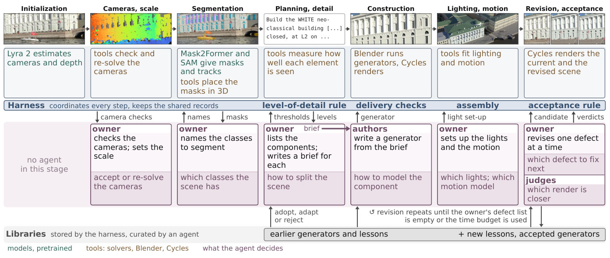
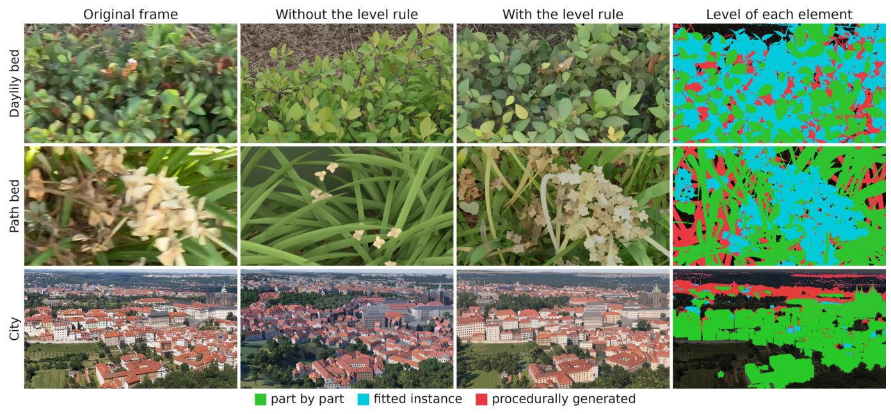
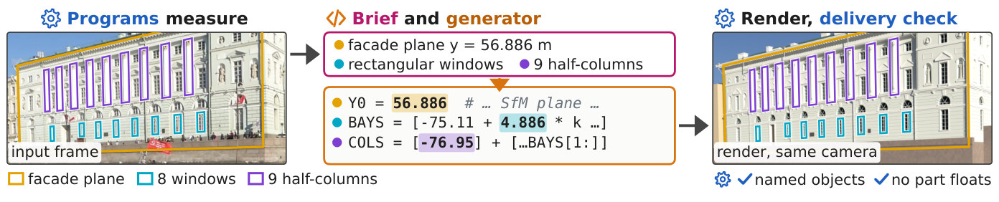
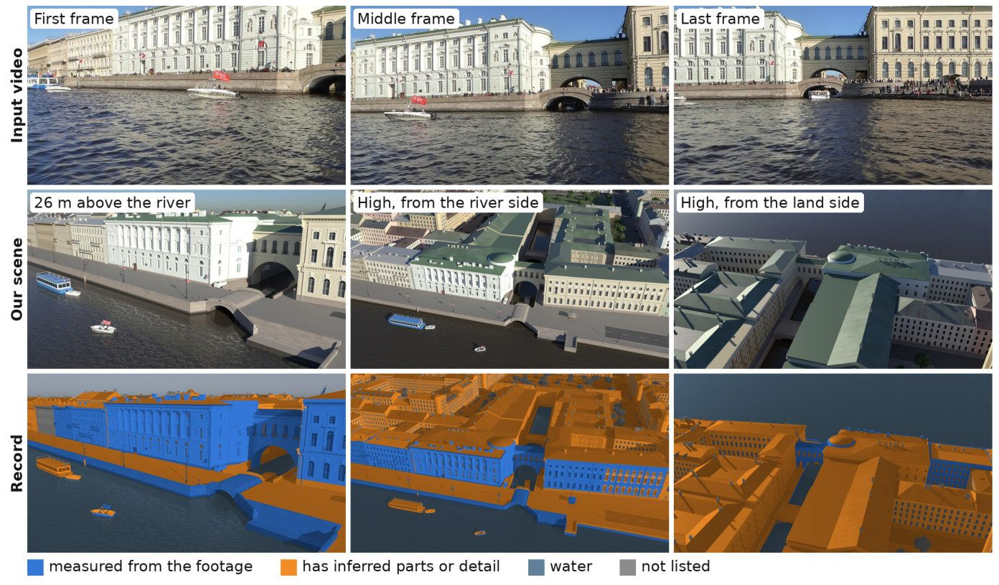
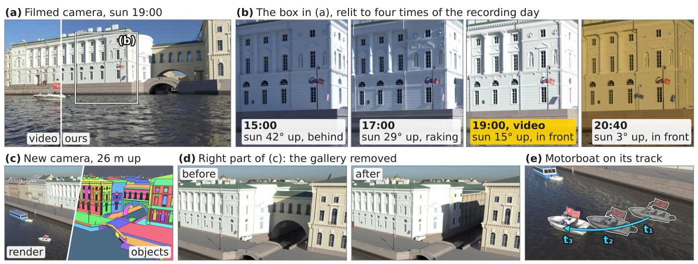
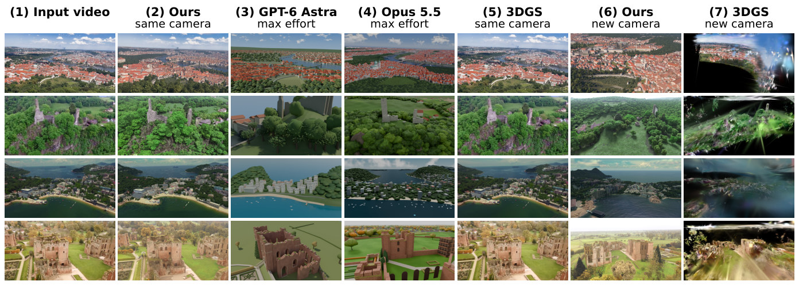
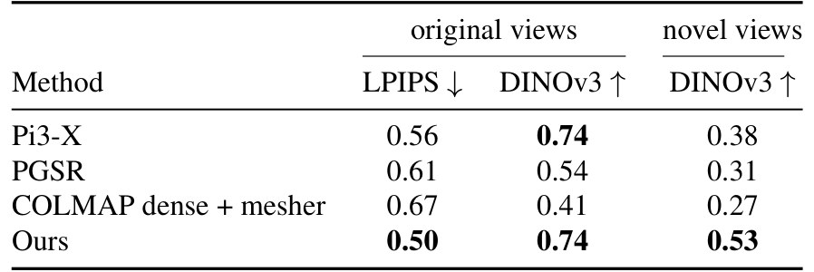
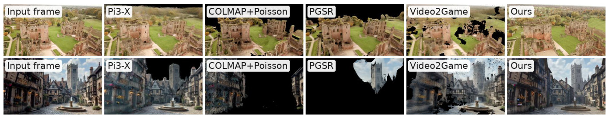
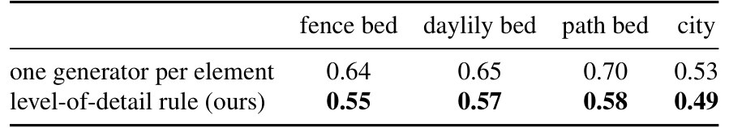
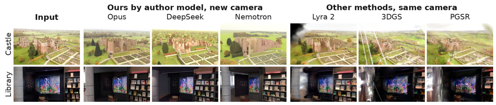

Agent-centric-real-to-sim · 归档于 2026-11-23
SceneAnything
SceneAnything: Agentic Reconstruction of Large-Scale Mesh Scenes from a Single Video
归档到 Agent-centric real-to-sim：一段实拍或生成的视频 → owner / author / judge 三种 agent 在 harness 里写成的可编辑 Blender mesh 场景，和 real2sim-anything-indoor 同一路线；它停在 Blender，不进物理仿真器。
TL;DR
- Problem
- 一段视频要变成由分开、可编辑的 mesh 物体组成、换了视角也成立的 3D 场景。直接让 GPT-6 Astra / Opus 5.5 写 Blender，布局、尺度、光照都错；3DGS 在原视角好，到新视角就碎；点云或 mesh 重建只有看到的那一面。
- Idea
- harness 按固定协议协调 agent、视觉模型和图形工具：先给共享的相机、深度、分割估计；scene-owner agent 规划场景并给 author agent 写 brief，author 写参数化 Blender 程序；按可见度和拟合度的 LoD 规则定每个元素建多细；没拍到的部分补全并标为 inferred；每次修订要过程序检查和独立 judge 盲评才被接受。
- Result
- 30 个场景、101 个原视角帧：LPIPS 0.51，直接用 Opus 5.5 / GPT-6 Astra 是 0.66 / 0.69（§4.2）；新视角 DINOv3 0.53，video-to-3D 方法最好 0.38（Table 1，10 个场景）。输出只是 Blender / Cycles 场景：不进物理仿真器，也没有质量、摩擦参数。
Problem
一段视频要变成能换视角、能编辑的 mesh 场景：直接 agent 量不准也不会自查，重建方法只拟合看到的像素
Running example · 后面每个 stage 都跟着它走
Winter Palace embankment（论文 Fig. 2、S1、S5、S6 用的都是它）：在涅瓦河的船上手持拍摄圣彼得堡 Palace Embankment → 输入 一个连续镜头的帧 + 时间戳，画面里有 Hermitage Theatre 的白色立面、拱廊、远处一排宫殿、码头上的人、驶过的摩托艇 → 想要：一个 Blender 场景，楼、水面、船都是分开、命名、可移动的 mesh，有真正的光源；从视频没有过的相机（如 河面上方 26 m）看也成立；没拍到的屋顶、背面、庭院也补出来，并标明是推断的。
flowchart LR IN["embankment 视频
船上手持，一个镜头"]:::example IN --> A1["直接 agent
Astra / Opus 5.5"] A1 --> AX["自定相机尺度、自判完成
LPIPS 0.69 / 0.66"]:::gap IN --> B1["3DGS / Lyra 2
Gaussian 拟合像素"] B1 --> BX["离开拍摄路径就碎
Fig. 1 第 7 列，无数字"]:::gap IN --> C1["video-to-3D 几何
Pi3-X · PGSR · COLMAP"] C1 --> CX["只有看到的面、有空洞
新视角 DINOv3 ≤ 0.38"]:::gap
数字都不是这个场景单独的：直接 agent 是 30 个场景、101 帧的平均（§4.2；斜杠前 GPT-6 Astra，后 Opus 5.5）；video-to-3D 是 Table 1 的 10 个场景，embankment 不在其中，因为 PGSR 在它上面失败、COLMAP 的结果对不上原相机（Supp. S12）。3DGS 只有定性图（Fig. 1 第 5、7 列，Fig. S2）。直接 agent 的坏法来自 §1 和 Supp. S2：要自己定相机和尺度、自己判断何时完成，有的把视频画面投到代理面上，新视角就露馅。video-to-3D 一行是推断：依据 §2（它们只恢复看到的表面）和 Fig. 4 的黑色空洞（no output）。
根本问题：直接 agent 会建模，但没有量测依据，还自己验收；重建方法有量测，但只拟合看到的像素，不分物体，也补不出没拍到的面。 这篇的切入点：把分工写死在 harness 里：视觉模型和工具负责量，agent 只做判断（怎么拆、怎么建、先修哪个缺陷），程序检查和独立 judge 负责验收；每个物体写成参数化 generator，既拟合看到的面，也生成看不见的面并标 inferred。
Related work
| 相关工作 | 解决什么 | 怎么解决 | 和本文的区别 |
|---|---|---|---|
| 同一问题 · 别的解法 | |||
| 直接让前沿 agent 重建 GPT-6 Astra、Claude Opus 5.5（max effort） | 视频 → Blender 场景 | 通用 agent 拿到视频和 Blender，自己迭代到认为完成 | 没有共享量测、拟合工具和独立验收 → 本文的 owner 也是 Opus 5.5，但量测由 harness 给，修订由别的 judge 盲评（E1） |
| Video-to-3D 重建 Pi3-X、PGSR、COLMAP dense + mesher；3DGS、Lyra 2 | 视频 → 点云、mesh 或 Gaussian | SfM / MVS、feed-forward point map、Gaussian splatting 拟合外观 | 只有看到的表面，不分物体 → 本文只把 Lyra 2 当可纠正的量测先验，建分开命名的 mesh，并补全看不见的部分（E2） |
| 物体级重建 / 生成 Scan2CAD；MIDI-3D、SceneGen、Gen3DSR、SAM 3D Objects（单图）；HoloScene、SimRecon、FIRE3D；Video2Game | 得到分开的物体 mesh，或可交互的环境 | 检索并对齐 CAD，或用学到的先验生成物体；Video2Game 从视频重建可交互 mesh 环境 | 物体由网络或检索一次给出，建法改不了、也不能复用 → 本文的物体是拟合到视频的参数化程序，可重新拟合，进库复用（§2） |
| 相似做法 · 别的问题 | |||
| Agentic 场景构建（本文的方法属于这一类） SceneCraft、3D-GPT、LayoutGPT、Holodeck；VIGA、BlenderAlchemy、SceneConductor、HARMONY；Scenethesis、SAGE | 文字或单图 → 3D 场景，或编辑现有场景 | LLM 摆资产、写场景程序、看渲染再改；generator 配 critic / verifier | 没有视频量测，修订多由 agent 自评 → 本文以视频量测为准，在同一个装配场景里比修订，judge 两种顺序各看一次、带相同图对照、按预定规则接受 |
| 程序化生成、程序复用、LoD Infinigen；Voyager、SceneCraft 函数库；渲染 LoD（Clark 1976、hierarchical 3DGS） | 大场景生成；跨任务复用程序；按观看条件选渲染表示 | 程序化规则；存可复用程序；按视距选表示 | 不对应某段真实视频，LoD 只为渲染服务 → 本文库里存的是拟合过视频、盲评通过的 generator；LoD 按可见度和拟合度分配建模精度 |
来源：论文 §1、§2 Related Work、§4.1 Baselines 和 Supp. S10，未另行检索。有数字对比的只有前两行；Video2Game 和单图生成器只有定性图（Fig. 4、Fig. S3）。论文没有和 library 里任何一篇（含两轮 agentic real-to-sim 论文）比较。
Level 1 · Big picture
harness 写死分工：模型和工具负责量，agent 判断并写 Blender 程序，程序检查加独立 judge 负责验收；循环到 owner 列不出缺陷或时间用完

怎么读这张图
- 顶行 7 张小图：从左到右是 Initialization → Cameras, scale → Segmentation → Planning, detail → Construction → Lighting, motion → Revision, acceptance，全是 embankment 这一 run 的产物。
- 小图下面一排框：绿字是预训练模型（“Lyra 2 estimates cameras and depth”、“Mask2Former and SAM give masks and tracks”），棕字是工具（“tools check and re-solve the cameras”、“Blender runs generators, Cycles renders”）。
- 蓝色横带 Harness：“coordinates every step, keeps the shared records”；带上写着它执行的四条规则：level-of-detail rule、delivery checks、assembly、acceptance rule。
- 横带上下的箭头：agent 和 harness 交换什么：camera checks、names / masks、thresholds / levels、generator、light set-up、candidate / verdicts。
- 下方紫框：每个 stage 由谁做事（浅格）、替场景决定什么（深格）。owner 决定 accept or re-solve the cameras、which classes the scene has、how to split the scene、which lights / which motion model、which defect to fix next；authors 决定 how to model the component；judges 决定 which render is closer。Initialization 一栏是 “no agent in this stage”。
- Planning 上方的代码框：“Build the WHITE neoclassical building [...] closed, at L2 on ...” 就是 owner 给剧院 author 的 brief（Stage 2），紫色箭头 brief → authors。
- 右下 “↺ revision repeats …”：修订循环一直跑，直到 owner 的缺陷清单为空或时间预算用完。
- 底部灰带 Libraries：harness 存、一个 agent 整理；规划时 owner 对旧 lesson 做 “adopt, adapt or reject”，构建时取 “earlier generators and lessons”，接受后写回 “+ new lessons, accepted generators”。
flowchart LR I["Input · 一个镜头
embankment 视频"]:::example --> M["Harness 协议
量 → 拆 → 写 → 验"]:::win M --> O["Output · Blender
分开的 mesh + 光 + 动画"]
- 输出：Blender 场景：分开命名的闭合 mesh、材质、真正的光源、受支持的运动物体的动画，Cycles 路径追踪渲染。不导入任何物理仿真器，也没有质量、摩擦、碰撞参数。
- 次要用途：输入也可以是生成的视频，接在 text-to-video 后面就成了 text-to-scene。100 个场景里 17 个是生成视频；论文没说用的是哪个视频生成模型。
Level 2 · Stages
6 个 stage：先量、再拆、定精度、写程序、装配，最后一轮轮修订
flowchart TD S1["1 · 共享量测
码头上的人定尺度"] --> S2["2 · Owner 规划 + brief
自建水面，5 个 author"] S2 --> S3["3 · LoD 规则
柱 L2 · 宫殿 L1 · 城 L0"]:::win S3 --> S4["4 · Author 写 generator
立面 y = 56.886 m"] S4 --> S5["5 · 装配：光照 + 运动
太阳 20°，摩托艇轨迹"] S5 --> S6["6 · 修订 + 验收
双顺序盲评"]:::win S4 -.->|F 不过，降为 L1| S3 S6 -.->|下一个缺陷| S2 click S1 href "#stage-1" click S2 href "#stage-2" click S3 href "#stage-3" click S4 href "#stage-4" click S5 href "#stage-5" click S6 href "#stage-6"
点击 stage 展开 Level 3 细节；虚线是回退。贯穿全程的分工和两个库单独一块：Harness 协议与跨 run 的库。
Level 3 · Details
每个 stage 的细节
Stage 1 共享量测：相机、深度、分割 → 粗 3D 布局 一个镜头的帧 → 重力对齐、带尺度的相机表 + 深度 + 每帧 mask / track + 物体的大致位置
- Why：直接 agent 要自己定相机和尺度，于是布局和尺寸出错（§1）；所有部件必须共用一套相机和坐标，才能装到一起。
- 先验：harness 抽帧、检测镜头切换，一个 run 只重建一个连续镜头。Lyra 2 的 reconstruction branch（VIPE 估相机，微调的 Depth Anything 3 估深度，128 帧均匀采样）给出相机、深度和一个 Gaussian 表示，只当 “correctable hints”（Supp. S5、S8）。
- 相机校验：几何诊断工具（OpenCV 加数值计算，不是大模型）报重投影误差、轨迹跳变、竖直对齐、近处物体视差。owner 据此接受、重解或修正：平移的相机用 COLMAP / GLOMAP 重做 SfM，原地转的相机做只含旋转的 bundle adjustment；局部跳变的一段改用可信相机之间的有界插值（一段手机视频上，固定场景在这些帧的平均图像误差降 31%，Supp. S1）。
- 重力和尺度：owner 选重力线索（如竖直灭点），用两个独立的已知尺寸参照定尺度并核对是否一致；认出物体、知道它的真实尺寸，是工具做不到、要 agent 判断的事（Supp. S8）。
- 分割：owner 看帧、命名要分的类别，给文字或框 prompt；Mask2Former 给语义区域（远处连片的城区、树带、河面），SAM 3.1 按 prompt 分出每个实例，SAM 2.1 沿时间传播实例 mask 形成 track。agent 从不自己画 mask。
- 为什么要三个模型（Supp. S1 实测）：密集的透明椅子里 SAM 2.1 换 4 次身份，SAM 3.1 的 tracker 换 41 次（judge 7:0 选 SAM 2.1）；细柱子上 SAM 3.1 以 8:0 胜（recall 0.93 vs 0.75）；城市一帧里 SAM 3.1 只找到 25 栋楼、8.6% 像素，Mask2Former 标出连片的远处房屋，占 36%。
- 放进 3D：把重建点投影进各视角，深度缓冲去掉被挡的点，按重叠 mask 投票；平面拟合得到地面和立面，聚类给出实例的位置和范围。立面零件在 rectified plane 上量：把平面重采样成正射图，再用 SAM 3.1 分割，mask 框直接以米为单位。这些估计会继承相机、深度、分割的误差，也只描述看到的部分。
flowchart LR a["Lyra 2 先验
128 帧 · 相机 + 深度"] --> b["诊断 + owner
人定尺度，运河核对"] b --> c["分割 + 放进 3D
立面 y = 56.886 m"]
Running example 在这一步
码头上站着的人定尺度，运河的宽度作为第二个参照确认（Supp. S8）。Mask2Former 管河面和远处城区，SAM 3.1 分出剧院等实例；剧院立面在 rectified plane 上量出 8 个窗、9 根半柱的框，立面平面在 y = 56.886 m（Supp. S1、Fig. S1 左）。Fig. 2 第 2 张小图就是这一步的相机 / 深度可视化。
Stage 2 Owner 规划场景、写 brief 粗 3D 布局 + 帧 → 部件清单（含看不见的部分）+ owner 自建的粗场景 + 每个 author 一份 brief
- Why：整场重建交给一个 agent 太大；拆成有边界的任务后，一个 family 的 author 对所有实例共用一个 generator 和它的 lessons，较小的模型也接得住（§3.4，E4）。
- 术语：component = 由一个 author 负责的一块场景（一栋楼、一片地形）；family = 共用建造逻辑的一组物体或零件，可以跨楼（不同楼上的窗）；instance = family 的一次出现，参数和位姿可以不同；generator = 参数化的 Blender 程序。
- 计划：owner 写出 “the plausible whole this video belongs to”，按空间和层次拆，看见的和推断的分开标；连续表面（如地形）留在一个部件里（Supp. S5）。
- 粗场景 + 并行 author：owner 先自己建环境和 “main masses as measured proxies”，再给每个 family 或大型结构开一个 author，并行工作（Supp. S8）。
- brief 里有什么：相关观测、尺寸、坐标、相邻部件、支撑约束（放在什么上、连在什么上）、建议的 LoD，附当前光照、测量工具列表、相关的旧 generator 和 lessons。brief 是英文任务描述。
- 旧经验：开工前 owner 把适用的 lesson 归为 adopted、adapted、to be tested、deferred 或 rejected（Supp. S8）。
flowchart LR a["整体计划
看见 / 推断分开标"] --> b["粗场景
owner 自建水面"] b --> c["5 份 brief
剧院 at L2, closed"]
Running example 在这一步
owner 自己建了水面，给 5 个 author 发 brief（Supp. S8）。剧院是一个 component，半柱是一个 family，每根半柱是一个 instance。剧院的 brief 开头是 Build the WHITE neoclassical building [...] as a complete, closed building at L2 on its river facade，写明要对齐的测量平面和元素、哪些看不见需要推断、工作顺序（Supp. S8、Fig. S1）。
Stage 3 LoD 规则：看得多清楚就建多细 每个元素的 mask → 提议的建造级别 L0 / L1 / L2 → 建好后用轮廓拟合度复核
- Why：视频给不同元素的信息量差很多：近处一根半柱能看清零件，远处一排房子只有屋顶线。全按一个精度建，要么浪费，要么丢细节（§3.5）。
- 三个级别：L0 procedural recipe：按所在区域估计的密度、尺寸、颜色在支撑面上程序生成。L1 fitted instance：把一个 generator 实例的位置、尺度、高度、朝向拟合到这个元素自己的 mask。L2 part by part：每个零件用自己的 mask 和测量来建，再对零件递归套用规则。
- 级别 ≠ 层次深度：元素有层次（街区 → 楼 → 窗；花坛 → 植物 → 叶子），级别只说一个元素怎么建，同一 family 的不同实例可以是不同级别。
| 符号 | 白话 | 例子里的值 |
|---|---|---|
| e | 一个元素：一栋楼、一根半柱、一株植物 | 剧院的一根半柱 |
| T(e) | 这个元素有实例 mask 的那些帧 | 未报告 |
| ã(e) | 它的 mask 占整幅画面比例的中位数（每帧算一次 at(e)） | 未报告 |
| w(e)、m(e) | 零件有多宽（每个零件 mask 内切最大圆直径的中位数）；零件 mask 一共几个（出现在 k 帧就算 k 个） | 未报告 |
| n1、α1 | 实例可见测试的门槛：至少几帧有 mask、中位占比至少多少 | 默认 2 帧、0.1% |
| n2、α0、w0 | 零件可见测试的门槛：至少几帧里占比够大、多大算够大、零件至少多宽 | 默认 3 帧、1%、15 px |
| α2、m0 | 零件测试里中位占比、零件 mask 数的门槛 | 默认不设 |
| IoUt、τ | 第 t 帧渲染出的可见轮廓和观测 mask 的交并比（遮挡和观测一致）；拟合测试要求轨迹上中位数至少多少 | τ = 0.6 |
怎么读 Eq. (1)–(4)
- 实例可见测试（S1）：这个元素至少 2 帧有 mask（n1），占画面的中位比例至少 0.1%（α1）。
- 零件可见测试（S2）：至少 3 帧里占画面 1% 以上（n2、α0），零件宽度中位数至少 15 px（w0）。
- 提议（Eq. 4）：两项都过 → L2；只过实例测试 → L1；都不过 → L0。这是工具算的图像测量，不是 agent 的视觉判断；门槛由 owner 按 family 设定并写下理由，上面是默认值（Supp. S3）。
- 拟合测试（F，Eq. 3）：L2 建好后，在装配好的场景里渲染，轨迹上可见轮廓 IoU 的中位数至少 0.6（τ），不过就降为 L1。它只查轮廓一致，不证明内部零件对。
- author 有最终决定权：轮廓和邻居粘在一起的元素建低一级。例：daylily 花坛上一棵小树的 mask 有一段和后面的灌木合并，规则提议 L2，author 建成 L1（Supp. S3）。检测到的元素即使 mask 不够单独拟合也不丢，在父级约束内生成。记录同时存测量值、提议级别、实际级别。
- 新视角细节：装配后比较每个元素在交付视角（含新视角路径）里的最大投影尺寸和在输入帧里的尺寸；新视角比所有输入视角都近的地方，author 再生成一层更细的元素，同样标 inferred。
flowchart TD m["tools 量 mask
帧数 · 占比 · 零件宽"] --> s1["实例可见？
2 帧 · 0.1%"] s1 -->|否| L0["L0 recipe
沿河之后的城市"] s1 -->|是| s2["零件可见？
3 帧 1% · 15 px"] s2 -->|否| L1["L1 fitted instance
远处一排宫殿"] s2 -->|是| L2["L2 part by part
剧院半柱"]:::win L2 -.->|IoU 中位数不到 0.6| L1

怎么读这张图
- 四列：Original frame / Without the level rule / With the level rule / Level of each element。
- 前两行 Daylily bed、Path bed：没有规则时叶子种类对，但不是这一帧里的那些叶子；有规则后，近处的叶片和花一片片按自己的 mask 建出来。
- 第 4 列颜色：绿 = part by part（L2），青 = fitted instance（L1），红 = procedurally generated（L0）。
- 第三行 City：原帧约 1,800 栋楼；近处地标逐个、逐零件建（绿），远一些的房子按屋顶轮廓拟合，分不清的街区在观测区域内程序生成（红）。
Running example 在这一步
embankment 上：剧院的柱子逐根建（L2），远处那排宫殿用 fitted instance（L1），沿河建筑后面的城市用 inferred recipe（L0）（§3.5 末段）。剧院 brief 里写的就是 “at L2”。论文没给剧院各项测量的具体值。
Stage 4 Author 写参数化 Blender generator，补全没拍到的部分 brief → generator 代码 + 命名的闭合 mesh + 测量和 inferred 的记录（过 delivery checks 才能装配）
- Why：物体要分开、可移动、能重新拟合和复用，所以交付的是程序，不是一次性 mesh：修错时改脚本，不改存下来的 mesh（Supp. S8）。
- 怎么写：generator 的参数是尺寸、位置、朝向、数量；author 对照视频画面看渲染，改代码和参数，可选调用 inverse-rendering 工具。L1 拟合整个实例（可用一致的深度做有界变形），L2 的每个零件有自己的 mask 和测量。
- author 的循环：改 build script → 一次调用把部件放进场景、在 anchor 帧渲染 → 看对比图 → 决定下一步（Supp. S5）。
- 每个 run 都固定的要求：物体分开、可移动；看不见的面要补全；灯是真的灯。不许把视频像素贴到任何表面：没有 de-lit 投影、照片拼图、取自帧的顶点色、从帧里抠的天空。材质 = 类别外观 + 从去光照裁片量出的参数（颜色、粗糙度、花纹尺度、风化）（Supp. S5）。
- 交付和 delivery checks：交 generator 代码、命名的闭合 mesh、物体标签清单、声明的支撑、测量和推断部分的记录；harness 检查交付，并把渲染轮廓和观测 mask 比较，不过就退回重做。
- 补全并标 inferred：看不见的面和周边由观测部分同一个 generator 生成，记为 inferred；建造级别以下的细节由程序规则按估计的密度、尺寸、颜色生成，也标 inferred；位置不确定的元素在父级约束内生成，不丢（§3.4、§3.5、Supp. S13）。
flowchart LR a["brief
y = 56.886 m · 9 半柱"] --> b["generator
开间 4.886"] b --> c["delivery check
命名 · 不悬空"] b --> d["没拍到的面
同一程序 → inferred"]:::win

怎么读这张图
- 左 “Programs measure”：input frame 上的 facade plane（橙框）、8 windows（青框）、9 half-columns（紫框）；这些框是工具量的，不是 agent 画的。
- 中上 brief（owner 写）：“facade plane y = 56.886 m · rectangular windows · 9 half-columns”。
- 中下 generator（author 写）：
Y0 = 56.886 # … SfM plane …、BAYS = [-75.11 + 4.886 * k …]、COLS = [-76.95] + […BAYS[1:]]；同色高亮标出 brief 和代码里的同一个测量值。观测到的窗距约束开间，空间测量约束檐口高度（Supp. S8）。 - 右 “Render, delivery check”：同一相机下的渲染，框还是那 8 个窗、9 根半柱；下面两个勾：named objects、no part floats。

怎么读这张图
- 上排 Input video：First / Middle / Last frame，只拍到沿河立面。
- 中排 Our scene：“26 m above the river”、“High, from the river side”、“High, from the land side”，这些相机视频里都没有。
- 下排 Record：蓝 = measured from the footage，橙 = has inferred parts or detail（generator 在没有自身测量时生成的），灰蓝 = water，灰 = not listed。从陆地一侧看几乎全是橙色。
Running example 在这一步
剧院的 author 写出 Fig. S1 的 generator：Y0 = 56.886、开间 4.886、首根半柱 -76.95 直接带 brief 的测量值；渲染后 8 个窗、9 根半柱落回原框，过 named objects、no part floats。屋顶、背河的一面、庭院、拱廊后面的运河、码头墙后的地面、沿河之后的城市都没被拍到，由同一批 generator（取自库或本次 run 新写的）生成，记为 inferred（Supp. S13、Fig. S5）。
Stage 5 装配：光照、材质、相机模型、运动 各部件的 generator → 同一坐标系里装好的场景 + 拟合的太阳 / 天空或室内光、相机模型、运动动画
- Why：直接 agent 的光照出错（Fig. 1）；材质颜色只有在拟合好的光照下估才有意义；会动的东西要按原时间戳回放，换相机也对得上。
- 光源：owner 选光源和用来标定强度的区域，在别的区域检查；室外 = sun + sky，室内 = 看得见的灯具，窗和门作 sky portal。工具把太阳方向对着画面里的亮面、阴影面扫一遍，有日期、时间、地点就用来初始化。
- 材质：author 选材质模型；漫反射 albedo 在拟合的光照下估，亮面和阴影面不一致就重拟合光照；反光、透明表面用对应的材质模型。
- 相机模型：scene-linear 渲染经曝光、白平衡、有界 tone curve（γ ∈ [0.9, 1.1]，s ≥ 8）变成显示帧；只拟合各类别亮、暗像素和天空的中位数（每 4 个视角留 1 个），不拟合单个像素。比较光照或材质修订时这些参数固定，候选不能靠调曝光掩盖重建错误（Supp. S1）。
- 运动：owner 选刚体、机构或水面表示，工具拟合参数：刚体位姿对齐跟踪轮廓，轨迹受支撑约束；机构用从序列估的轴、周期、速度；水面是拟合了范围、速度和花纹的波面；动画用原时间戳。浪花、细扶手、快转的旋翼只报告为区域。人不建，人的 mask 排除在拟合和比较之外。
- 和物理的关系：这一步拟合的是外观和运动学，不是动力学：没有质量、摩擦、碰撞参数，动画是回放，不是仿真。
flowchart LR a["装配
共享坐标系"] --> b["光照 + 相机模型
太阳 20° ≈ 18:16"] b --> c["运动拟合
摩托艇按原时间戳"]

怎么读这张图
- (a) Filmed camera, sun 19:00：左半 video、右半 ours，用拍摄当天 19:00 的太阳位置照明。拟合到画面阴影的太阳高 20°，是当天 18:16 的高度（Fig. 5A 用的就是它）。
- (b) 框里的剧院东端，重打光到当天四个时刻、曝光固定：15:00 sun 42° up, behind（立面只有天光）、17:00 29° raking（掠过柱子）、19:00 video 15° in front（黄色 = 视频的时刻）、20:40 3° in front；19:00 和 20:40 旗子在墙上投下影子。
- (c) New camera, 26 m up：视频没有的相机；左 render，右每个物体一种颜色（objects），说明场景由分开的物体组成。
- (d) 去掉拱廊前后：拱廊后面的运河和墙视频里从没出现，是没有测量地补出来的。
- (e) Motorboat on its track：低机位，摩托艇回放测出的轨迹（青色），t3 的渲染叠加 t1、t2 两个较早时刻；船员等人是临时出现的，不建。
Running example 在这一步
太阳对着画面阴影拟合到高 20°（当天 18:16 的高度）；视频是 19:00 拍的，那时太阳高 15°，两者差约 5°（我按 Fig. S6 的两个数算的，论文没讨论）。摩托艇作为刚体，位姿对齐跟踪的 mask 后按原时间戳回放；船员和码头上的人不建。论文没给这艘船的 IoU，§4.5 的 0.89–0.98 来自另外五个运动物体。
Stage 6 修订和验收：程序检查 + 独立 judge 盲评 当前接受的场景 S（parent）+ 一个声明的修订 S′（candidate）→ 接受或拒绝；循环到缺陷清单为空或预算 B 用完
- Why：agent 太容易接受自己的作品：直接 agent 自己判断何时完成，30 个场景上 LPIPS 0.66 / 0.69，本文 0.51（Supp. S2）；LLM judge 还有位置偏差和语境偏差。
- 提修订：owner 对照原帧列缺陷，挑最严重的一个，自己改或给 author 发新 brief；每次只评一个声明的修订（加上它需要的重拟合）。观测缺失或矛盾时可以补分割、补测量或改正派生估计；改了相机或测量，owner 发布新值并重发用过旧值的 brief。原帧始终是图像比对的参照。
- 程序审计（scene checks）：查附着关系、穿插、非灯材质发光、画上去的反光、不合理的 albedo；除 “画上去的反光” 由 owner 目检，其余由程序测。悬空 = 最低顶点到下方第一个表面的中位间隙超过 3 cm（玻璃和水不算支撑）；穿插 = 不同部件之间重叠的三角形对（小的静置接触除外）；albedo 不在 0.02–1 内算一条（Supp. S8）。每一类的条数都不能多于 parent。
- 运动检查：每个运动物体的跟踪 mask IoU 中位数最多降 0.005。审计或运动检查不过，直接拒绝，不进视觉评判。
- 盲评：owner 先声明要比的 render pair 和 primary view group（如原视角组、新视角组，每组 30–40 对）；候选和 parent 用同一相机表、时间戳、渲染设置，渲进同一个完成的场景。judge 是独立 subagent，不知道构建历史和候选身份，只看参考帧和两张渲染，先列差异，再选更接近的或 tie。新视角只评一致性和合理性，不评看不见的几何对不对。
- 两种顺序 + 对照：每对按两种显示顺序各评一次，同一方两次都赢才算一胜；tie 或两次不一致的对不计入。每批带 identical-image control（两张一样的图）。
- 接受规则：primary group 上双侧 sign test 在 0.05 水平显著，control 判 tie，且没有别的组被 parent 以同一检验赢下。owner 事先声明为 “physical validity 所需” 的修正（去掉审计条目）走同样的审计，只要 parent 没赢任何组就保留。
- 提前停：每批 4 对，全集得出当前结论的概率超过 0.95 就停；至少评 8 对；control 上两次都选同一边则不许提前停。在 183 次存档比较上，这样保留了 99.1–99.6% 的完整评判结论，只用 66–91% 的评判单（Supp. S2）。
- 为什么这样设计（Supp. S2 实测）：普通 prompt 下，三个 judge 在完全相同的两张图上 66 次里 61 次选了一边；两个 author 的植被放在各自完成度不同的场景里比，18 个结论全给了背景更丰富的那个，放进同一场景后结论反转。
- 记成 lesson：每次修订在当前场景的副本上做，不论接受与否，结果都记成 lesson。
flowchart TD a["owner 列缺陷
挑最严重的一个"] --> b["candidate S′
author 改 generator"] b --> c["程序审计 + 运动检查
悬空 3 cm · IoU 0.005"] c -->|变差| r["拒绝
parent 不变"]:::gap c -->|通过| d["双顺序盲评
30–40 对 + control"] d --> e["sign test
0.05 · 别的组不输"] e -->|赢| acc["接受 S′
写回 lesson"]:::win e -->|没赢| r
Running example 在这一步
论文没有报告 embankment 这一 run 的具体修订序列；Fig. 2 最右一格的三张图只示意 “Cycles renders the current and the revised scene”。这条规则在别的场景有数字：fence bed 上每次加入至少 300 片观测到的叶子，盲评结果是 8:0、8:0、10:0（§4.3）。
贯穿全程 Harness 协议与跨 run 的库 Stage 1–6 都按它分工：谁决定、谁量、谁验收；接受的 generator 和 lessons 进库，下一个视频再用
- agent（Fig. 2 紫色）：owner、authors、judges，外加一个整理 lesson 的 curation agent。它们只决定开放式的事：场景里有哪些类别、怎么拆、怎么建、用什么灯和运动模型、下一个修哪个缺陷、哪张渲染更接近。默认 owner、author、judge 都是 Claude Opus 5.5（§3.1、§4.1、§4.4）。
- 预训练模型（绿）和工具（棕）：Lyra 2（含 VIPE、Depth Anything 3）、Mask2Former、SAM 3.1、SAM 2.1 负责量；相机求解器和诊断、3D 定位、拟合工具、Blender（执行 generator）、Cycles（渲染）负责算。
- harness（蓝）：协调这些角色，保存共享记录，执行 LoD 规则、delivery checks、assembly、scene checks 和 acceptance rule。论文的贡献是这套解的结构；建出来和评出来的质量取决于底层模型（Supp. S8）。
- 记录分三类：观测（原帧）、估计（mask、相机、深度、3D 点、测量，可能有错）、推断（没拍到的补全）。例：立面是直接观测的，它的距离是估计的，背墙是推断的（Supp. S8）。
- 两个库：generator library Lg 按 family 存被接受的程序；experience library Le 存 lesson：一条带条件的短陈述（在什么条件下观察到、试了什么、结果如何、哪里不适用）。进 Lg 要满足三条：所在修订在盲评中被接受、单独渲染这个部件检查过、记录了来源场景和测量。发布只追加，旧场景可复现。复用的 generator 走同样的拟合、检查、验收；不更新模型权重。
- 预算和失败：预算 B 是一个 run 的时间上限（具体值未报告）；如果没有任何初始装配通过检查，run 返回 “no scene”。
flowchart LR mo["模型 + 工具：量
Lyra 2 · SAM · Cycles"] --> h["harness：记录 + 规则
LoD · 检查 · 验收"]:::win ag["agents：判断
owner · author · judge"] --> h h --> lib["两个库
generator · lesson"]
Running example 在这一步
embankment 没拍到的部分 “由与观测部分相同的 generator 生成，取自库或本次 run 写的”（Supp. S13）。generator 是为一个 family 写的通用程序，所以拟合沿河立面的那个 generator 也建出它的背面，并在场景延伸处补出更多建筑。
Recap：例子覆盖了论文的哪些 idea
| 论文里的 idea | 例子里在哪体现 |
|---|---|
| 共享相机 / 深度：Lyra 2 先验 + 诊断 + 重解 | Stage 1：Lyra 2 给相机和深度，owner 接受或重解 |
| 两个独立参照定尺度 | Stage 1：码头上的人，再用运河宽度核对 |
| 三个分割模型 + 放进 3D + rectified plane | Stage 1：剧院立面 8 个窗、9 根半柱的框，平面 y = 56.886 m |
| owner 规划整体、自建粗场景、并行 author | Stage 2：owner 自建水面，给 5 个 author 发 brief |
| brief 的内容 | Stage 2：剧院 brief “…complete, closed building at L2…” |
| LoD 规则（两个可见测试 + 拟合测试；L0 / L1 / L2） | Stage 3：剧院柱 L2、远处宫殿 L1、后面的城市 L0 |
| 参数化 generator + delivery checks | Stage 4：Y0、BAYS、COLS 带测量值；named objects、no part floats |
| 补全没拍到的部分并标 inferred | Stage 4：屋顶、背面、庭院、拱廊后的运河 → Fig. S5 的橙色 |
| 光照拟合 + 相机模型 | Stage 5：太阳 20°（18:16 的高度），再重打光到 4 个时刻 |
| 运动拟合 | Stage 5：摩托艇按测出的轨迹回放 |
| 程序审计 + 运动检查；双顺序盲评 + sign test | Stage 6：只有规则，本场景没有修订记录；数字来自 fence bed（8:0、8:0、10:0） |
| 跨 run 的两个库 | 贯穿：看不见部分的 generator 取自库或本次 run 新写 |
| 编辑：移除、重打光 | Stage 5 / E5：Fig. S6 (b)(d)，四个时刻、去掉拱廊 |
| 换 author 模型 | E4：用 castle 和 library 两个场景，embankment 没做 |
| 生成视频输入（text-to-scene） | E2：Table 1 的 10 个场景里 6 个是生成视频；embankment 是实拍 |
| 不进物理仿真器 | Level 1、Stage 5、Limits |
Results
同一个 Opus 5.5 加上 harness，原视角明显更准；新视角的内容一致性超过能产出几何的 video-to-3D 方法；LoD 规则在 4 个场景都降低 LPIPS；author 能换小模型，owner 不能
顺序同论文 §4：E1 和直接 agent 比 → E2 和 video-to-3D 方法比 → E3 LoD 消融 → E4 换 author 模型 → E5 运动和编辑 → E6 花费（§4.1）。比的都是和输入视频的图像相似度（LPIPS、DINOv3）或盲评胜负；没有几何真值，也没有和 baseline 比时间或成本。
E1同一个模型，加不加 harness 差多少？§4.2 · Fig. 1
| 方法（30 个场景、101 个原相机帧） | LPIPS ↓ | DINOv3 ↑ |
|---|---|---|
| GPT-6 Astra，max effort，直接用 Blender | 0.69 | 0.52 |
| Claude Opus 5.5，max effort，直接用 Blender | 0.66 | 0.55 |
| SceneAnything（owner 为 Opus 5.5） | 0.51 | 0.76 |
按正文 §4.2 的数字自建的小表，论文没有这张表。

怎么读这张图
- 四行：山上看的城市、城堡废墟、Stanley 海滨、Kenilworth Castle；embankment 不在这张图里。
- 比第 2 列和第 3、4 列：直接 agent 的楼和树是简化形状，Stanley 那行的楼成了白色方块，Kenilworth 那行的墙体成了光秃的砖盒，水面、草地颜色和光照也对不上。
- 比第 5 列和第 7 列：3DGS 在原相机几乎和视频一样，换到新相机就碎成雾状；第 6 列本文的场景在新相机下仍是完整的物体。
- 说明什么
- 原视角更准。LPIPS 0.51 对 0.66 / 0.69，DINOv3 0.76 对 0.55 / 0.52；对手里就有本文 owner 用的同一个 Opus 5.5。
- 在故事里
- 说明问题出在缺量测和独立验收，不在模型能力；这是 harness 的主要证据。
- 指标
- LPIPS（越低越好）和 DINOv3 特征相似度（越高越好），对输入视频原相机下的帧；这些帧也是输入的一部分。
- 怎么评测
- 30 个场景、101 帧；哪 30 个场景、每个几次 run 未报告。
- baseline 拿到视频和 Blender，没有 harness、量测、拟合工具和验收流程，自己迭代到认为完成。
- baseline 的 token 和时间未报告；本文一个 run 的输出 token 是 0.9–5.6 M（E6），投入的算力很可能不对等（推断）。
E2和 video-to-3D 方法比，原视角和新视角谁更好？§4.2 · Table 1 · Fig. 4


- 说明什么
- 新视角的内容一致性更高，原视角不输。新视角 DINOv3 0.53，对 Pi3-X 0.38、PGSR 0.31、COLMAP 0.27；原视角 LPIPS 0.50，最好的对手 0.56。覆盖面上，21 个场景本文都交出了场景，Pi3-X、PGSR、COLMAP 能对齐原相机的分别是 19、15、12 个（Table S3）。
- 在故事里
- 显示 “建完整物体 + 补全看不见的面” 在离开拍摄路径时的好处，这正是重建方法缺的。
- 指标
- 原视角：每个场景最多 8 个原相机帧的 LPIPS 和 DINOv3。新视角：8 个新相机，DINOv3 对最相近的原帧；论文明说这衡量内容相似，不衡量几何精度。
- 怎么评测
- 21 个场景（8 实拍 + 13 生成）都跑了；Table 1 只用所有方法都能对齐原相机的 10 个（4 实拍 + 6 生成）。对齐 = 相似变换，平均旋转残差小于 10°（Supp. S12）。embankment 不在这 10 个里。
- baseline 用各自发布的 pipeline；点云按点渲染，mesh 用自身颜色。Video2Game 只在 Fig. 4 出现，没进表；3DGS、Lyra 2 这类 Gaussian 方法不在表里，只有定性图（Fig. 1、Fig. S2）；单图生成器（MIDI-3D、SceneGen、Gen3DSR、SAM 3D Objects）只给一帧，见 Fig. S3。
- 对本文有利的一点（推断）：实拍场景的新相机路径用的就是本文 run 交付的环绕或飞越路径（Supp. S12）。
- text-to-scene：Table 1 的 10 个场景里 6 个是生成视频，Fig. 4 下排的老街也是生成的；论文没有分开报实拍和生成视频的数字。
E3LoD 规则能让细节更贴近视频吗？§4.3 · Table 2 · Fig. 3

- 说明什么
- 四个场景 LPIPS 都更低。fence bed 0.64 → 0.55，daylily bed 0.65 → 0.57，path bed 0.70 → 0.58，city 0.53 → 0.49。渲染出的植物覆盖参考叶片像素的 0.78（fence）和 0.84（path）；fence bed 上加入至少 300 片观测叶子的修订，盲评 8:0、8:0、10:0 获胜。
- 在故事里
- 支撑第二个贡献：按可见度和拟合度分配建模精度，比每个元素一个 generator 实例更贴近视频。
- 指标
- 规则管辖的元素像素上的 LPIPS；论文说三个花坛 “on every evaluated frame” 都更低，评了几帧未报告。
- 怎么评测
- 三个花坛，各一段手持镜头，最密的一个约 150 株杂草、灌木和蕨类；城市从山上拍，原帧约 1,800 栋楼。
- 对照组：每株植物（每栋楼）都是其 family generator 的一个实例。
- 没有单独消融两个可见测试和拟合测试的门槛；embankment 没做这个消融。
E4author 换成开源权重的模型还行吗？§4.4 · Fig. S2 · Supp. S9
| author（owner、judge 不变；11 个场景，原相机） | LPIPS ↓ | DINOv3 ↑ |
|---|---|---|
| Claude Opus 5.5 | 0.47 | 0.79 |
| DeepSeek V4.1 Flash | 0.55 | 0.66 |
| Nemotron 3.5 Super VL | 0.58 | 0.60 |
按正文 §4.4 的数字自建的小表，论文没有这张表。

- 说明什么
- author 能换小模型，owner 不能。换 author 后质量下降但场景仍成立：28 个 run 都交出了场景，保留分开的 mesh、拟合的光照和新视角下的连贯。开源模型担任所有角色时，19 小时后 Nemotron 只在 6 个场景中的 1 个、DeepSeek 在 4 个上有被接受的场景；Opus 当 owner 时，两者都是 6/6。
- 在故事里
- 支撑 “拆成有边界的任务” 这个设计：author 的任务有边界（一个 family、一个 generator、brief 里的测量），owner 的任务（规划、决定修什么）没有。
- 指标
- 原相机下的 LPIPS、DINOv3；单模型实验看有没有被接受的场景。
- 怎么评测
- 14 个场景，owner、交付要求、judge 不变；其中 11 个也有 Opus author 的 run，表里是这 11 个的均值。
- delivery checks 和 judge 能看出开源 author 差在哪：Nemotron 差在执行和自检，DeepSeek 的材质漂向饱和的默认值（Supp. S9）。
E5运动和编辑：拟合的运动跟得上视频吗？§4.5 · Fig. 5 · Fig. S4 · Fig. S6
| 运动物体 | 跟踪 mask IoU 中位数 | 质心误差中位数 |
|---|---|---|
| 高速列车、港口的船、缆索车厢、客机、回转起重机（五个合起来的范围） | 0.89–0.98 | 2–13 px |
按正文 §4.5 自建的小表，论文只给五个物体合起来的范围。编辑和运动的图见 Stage 5 的 Fig. S6（摩托艇、重打光、去掉拱廊）。
- 说明什么
- 拟合的运动贴得住视频，还能从新相机回放。五个运动物体 IoU 中位数 0.89–0.98、质心误差中位数 2–13 px。分开的 mesh 和显式光源让重打光、移除和移动物体成为可能（Fig. 5、Fig. S6）；编辑后露出的面是推断的。
- 在故事里
- 展示 “可编辑场景” 相对视频和 Gaussian 的实际用途。
- 指标
- 每个物体在所有被跟踪的帧上算 mask IoU 和质心误差的中位数；工具每个跟踪帧都记录，不只在评判帧上算。
- 怎么评测
- 运动是运动学拟合后回放，不是物理仿真；编辑只有定性图，没有数字。
- embankment 的摩托艇没给数字；人和水面以外的非刚体不在范围内（§4.6）。
E6一次 run 花多少？§4.1
| 项（40 个 Wikimedia Commons 场景：20 静态 + 20 有运动） | 数值 |
|---|---|
| owner、authors、judges 的输出 token / run | 0.9–5.6 M，中位 2.4 M |
| 按每百万输出 token 20 美元换算 | 每个场景 18–111 美元，中位 47 美元 |
按正文 §4.1 自建的小表。
- 说明什么
- 贵，但可以预估：中位每个场景约 47 美元的输出 token，不含视觉模型、拟合和渲染的算力（可在本地跑）。
- 在故事里
- 交代代价；直接 agent baseline 的 token、墙钟时间和预算 B 的值都未报告（只说单模型实验跑到 19 小时停）。
- 指标
- 一个 run 里所有 agent 的输出 token 之和；输入 token 未报告。
- 怎么评测
- 40 个场景，按 20 美元 / 百万输出 token 换算。
Limits
局限和开放问题
- 论文自述（§4.6）：最好的结果要商用模型，开源 author 做出的场景更差（E4）；没拍到的区域 “合理”，但质量和细节低于看到的区域；建立在不完美的相机、分割、深度和材质估计之上；一个 run 只重建一个连续镜头，跨剪辑统一是未来工作；不重建人，水面以外的非刚体运动不在范围内。
- 不是物理仿真：输出是 Blender / Cycles 场景，没有质量、摩擦、碰撞体，也没有导入任何物理仿真器。“physical audits” 只查悬空、穿插、发光、albedo 这类几何和材质合理性；运动是拟合后回放的动画（§3.6、Supp. S8）。
- 没有几何真值评测：所有数字都是和输入视频的图像相似度或盲评；新视角 DINOv3 论文自己说只衡量内容相似；新视角的 judge 也只评一致性和合理性，不评看不见的几何对不对（§3.6、§4.1）。
- 评测都是子集：直接 agent 30 个场景，Table 1 只有 10 个，LoD 消融 4 个；没有报告重复 run 的方差。
- judge 和 owner 是同一个模型：都是 Claude Opus 5.5。论文控制了显示顺序和相同图偏差，但没测同一模型偏好自家风格的可能（推断）。
- 还没放出：harness、指令、库和 100 个场景 “将会发布”，PDF 里没有链接（Supp. S7）。
For Agent-centric real-to-sim
对我们有什么用
- r2s-lite 的验收：锅盖 episode 第 9 次尝试过了宽松的成功规则，场景却是错的。SceneAnything 的做法正对这个问题：建造者不评自己；judge 只看参考帧和两张渲染，两种顺序都赢才算，每批带相同图对照（普通 prompt 下 66 次里 61 次在相同图上选了边）；primary view group 事先声明，sign test 0.05 且别的组不输；另加 “每类审计条目不得多于 parent” 的单调约束。可以直接替换 r2s-lite 的单一成功判据。
- real2sim-anything-indoor：同一条路线（视频 → Blender），可以直接借：相机 QA gate + 两个独立尺寸参照定尺度；一个 family 一个 generator（窗、椅子跨实例共用）；LoD 默认门槛（2 帧、0.1% → L1；3 帧 1% 且零件至少 15 px → L2；轮廓 IoU 中位数至少 0.6）；没拍到的部分标 inferred。它不建人，把人的 mask 排除在拟合和比较之外，这正好由我们的 GVHMR 人体运动补上。
- WorldClaw：SceneAnything 停在 Blender，没有质量、摩擦、碰撞体，要进 Genesis 得另补物理参数。但它的交付约束（分开命名的闭合 mesh、声明的支撑、悬空超过 3 cm 计数、跨部件穿插计数、真正的光源）正是导入仿真器前要满足的条件；“生成视频 → 场景” 也可以作为 WorldClaw “prompt → 场景” 之外的另一个入口。